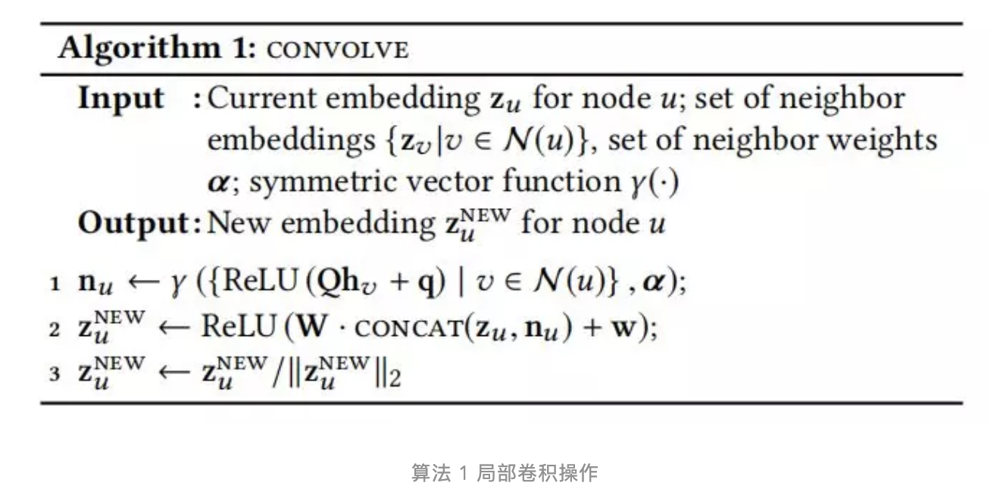
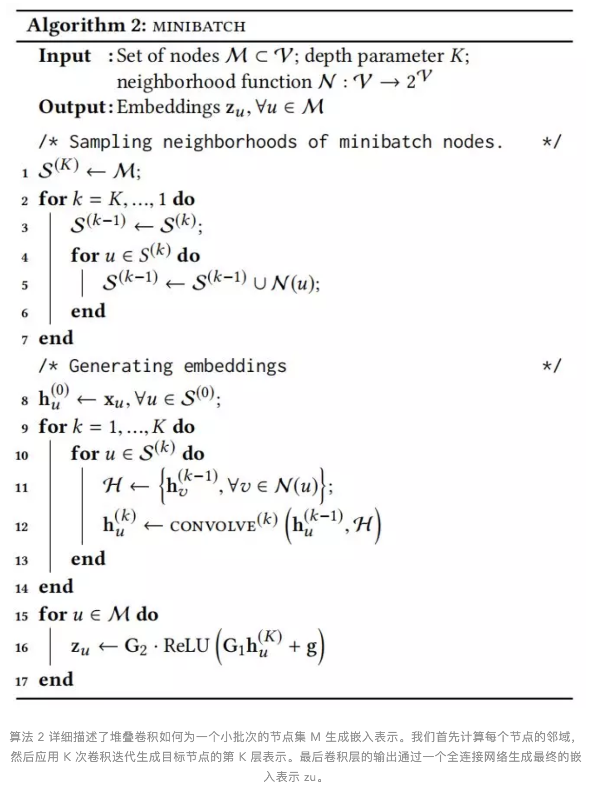
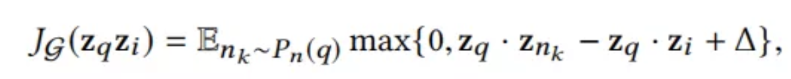

介绍
今天介绍一篇Pinterest和Stanford研究人员合作的文章，关于图卷积神经网络在推荐系统中的应用。Graph Convolutional Neural Networks for Web-Scale Recommender Systems
Pinterest是一家图片内容分享的网站，用户可以上传自己的图片（pins），创建收藏夹（boards），也可以把别人的图片保存到自己收藏夹中。文章中把图片和收藏夹之间建立了一个二部图，图和收藏夹是顶点，两者间若有收藏关系则用边连接。这样会建立一个数十亿顶点、百亿条边的图。
GCN
GCN 背后的核心思想是学习如何利用神经网络迭代地聚合来自局部图邻域的特征信息。一个“卷积”操作从一个节点的单跳图邻域转换并聚集特征信息，并且通过叠加多个这样的卷积操作，信息可以传播到图的远端。
现实环境所面临的主要挑战是如何将基于 GCN 的节点嵌入表示的训练和推理阶段扩展到具有数十亿个节点和数百亿个边的图中。而现有的基于Spectral GCN 的方法在训练期间都需要在全图拉普拉斯矩阵上运行，但当基础图具有数十亿个节点并且结构不断变化时，这种假设是不成立的。
这篇文章提出了一种新的图卷积网络 PinSage，能够生成包含图结构和节点特征信息的有效嵌入表示，并且设计了新的训练策略，以提高模型的鲁棒性和收敛性，是一种基于Spatial的方法。
GCN 和推荐系统
传统推荐系统通常有两类实现方式：一种是基于内容的，比如最近看了科幻题材电影，也会给你推荐其他科幻题材相关电影；另一种是基于用户-物品之间关系，比如和你相似的用户也看了什么，通常是利用协同过滤的方法。与基于内容的深度模型（如递归神经网络）不同的是，GCN 既利用了内容信息，也利用了图结构。
将embedding信息用在推荐系统基本遵循以下步骤：
- 收集数据
- 训练模型
- 生成embedding
- 做出推荐(在embedding空间利用最近邻检索生成推荐结果)
PinSage 充分利用了以下几个关键的思想，大大提高了 GCN 的可扩展性：
- 局部卷积：传统的 GCN 算法通过将特征矩阵乘以全图拉普拉斯的幂进行图卷积。PinSage 算法通过对一个节点周围的邻域进行采样，并从该采样邻域动态构造一个计算图，来实现高效的局部卷积。这些动态构造的计算图指定了如何围绕特定节点进行局部卷积，并降低了在训练期间对整个图进行操作的需要。
- 通过随机游走采样：取节点的整个邻域进行卷积，会产生巨大的计算图，因此我们利用采样的方法。我们开发了一种利用短随机游走对计算图进行采样的技术。该方法的另一个好处是每个节点都有一个重要性评分，我们在池化 / 聚合步骤中可以利用该评分。
- 重要性池化：图卷积的一个核心组成部分是图中来自局部邻域的特征信息的聚合。我们引入了一种基于随机游走相似性度量的方法来衡量节点特征在这个聚合中的重要性，从而在离线评估度量中获得了 46% 的性能提升。
- 生产者 - 消费者 minibatch 构造：设计了一个生产者 - 消费者架构，用于构造 minibatch 运算，以确保在模型训练期间最大限度地利用 GPU。一个大内存、CPU 绑定的生产者有效地对节点网络邻域进行采样并获取定义局部卷积所需的特征，而一个 GPU 绑定的 TensorFlow 模型则消费这些预定义的计算图，实现高效地 SGD 计算。
- 有效的 MapReduce 推理：给定一个完全训练的 GCN 模型，我们设计了一个高效的 MapReduce 管道，可以将训练后的模型分布到数十亿个节点上，同时最小化重复计算。
- 课程训练：逐步提升训练样本的难度，从而获得了 12% 的性能提升。
方法
问题定义
文章中把图片和收藏夹之间建立了一个二部图，图和收藏夹是顶点，两者间若有收藏关系则用边连接。这样会建立一个数十亿顶点、百亿条边的图。

采样
从某个顶点出发，进行random walk，统计每个节点被访问的次数作为这个顶点的权重。对每个顶点只取top K个权重最高的相邻节点作为相邻节点。
局部卷积
堆叠卷积

损失函数
我们使用基于最大边界的损失函数hinge loss。基本思想是我们想最大化正样本的内积，即查询条目和对应的相关条目的内嵌表示。同时我们想确保负样本（查询条目和无关条目的嵌入表示）的内积比正样本的内积小，并且小的程度超过一个提前定义的边界。因此一对节点 (zq, zi) 的损失函数定义如下：

负采样
在每个minibatch里采样相同的500个负样本，包括一些“难负样本”：即与查询条目 q 相关，但是不如正样本 i 相关程度高的负样本。它们是通过对图中条目根据个性化的 PageRank 分数进行排序而生成的。排位在 2000-5000 的条目被随机采样为“难负样本”。
在训练的第一个阶段，不使用“难负样本”，使算法在参数空间中快速找到损失相对较小的区域。然后，我们在随后的训练中添加“难负样本”，让模型学习如何区分高度相关的图钉和仅轻微相关的图钉。在训练的第 n 个阶段，我们将 n-1 个“难负样本”添加到每个样本的负样本集合中。